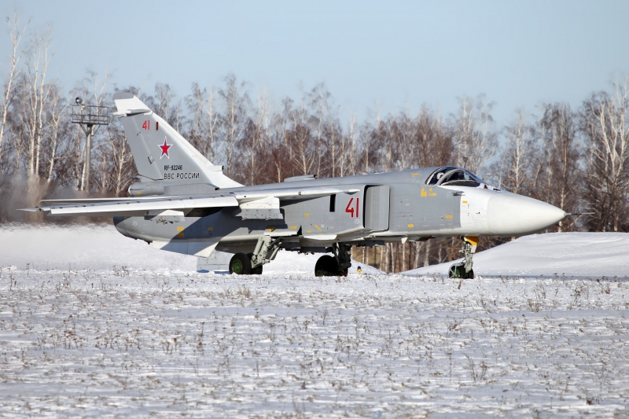
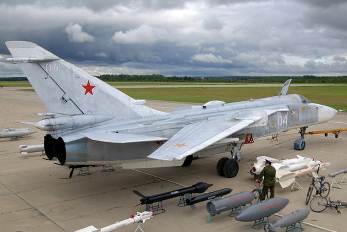
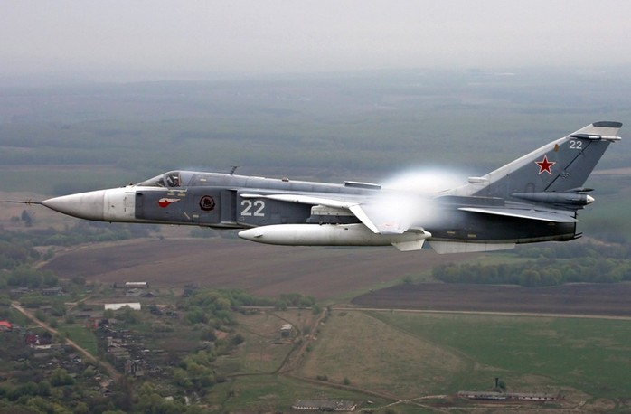
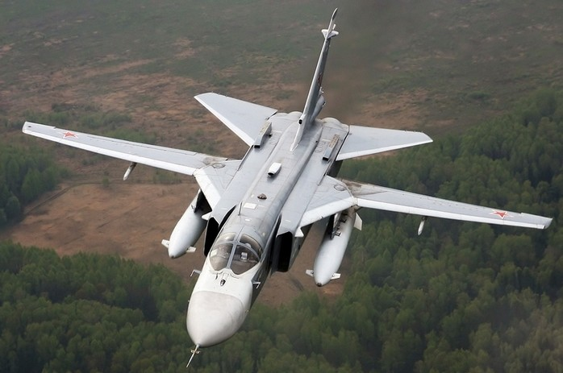

| Технические характеристики; |
| Экипаж, чел. | 2 |
| Двигатели ТРД АЛ-21 Ф-3 | 2 |
| Тяга двигателей, кгс | 2*11 000 |
| Скорость макс., на высоте/ у земли без подвесок, км/ч | 2 240/ 1 400 |
| Перегрузки эксплуатационные, ед. | 7 |
| Потолок практический, м | 11 000 |
| Дальность максимальная, км | 3 800 |
| Масса максимальная/нормальная, кг | 39 700/ 36 000 |
| Масса пустого самолета, кг | 19 000 |
Масса посадочная, кг:
- предельная
- максимальная
- нормальная |
28 000
26 000
25 035 |
| Масса боевой нагрузки, кг | 8000 |
| Емкость внутренних топливных баков, л | 11 700 |
| Перегрузочная масса боевой нагрузки, кг | 11 000 |
| Практический радиус действия, км | 410-560 |
| Длина самолета, м | 24,53 |
| Высота самолета, м | 6,19 |
| Размах крыла, макс/мин., м | 17,63/10,36 |
| Вооружение |
Пушка шестиствольная ГШ-30-6
- Калибр, мм
- Боекомплект, снарядов
- Скорострельность, выстрелов/мин. | 1
30
500
5 000 |
| Кол-во внешних узлов подвески | 8 |
- УР «воздух-воздух» Р-60М
- УР «воздух-земля» Х-23, Х-25, Х-29, Х-58
- корректируемые авиабомбы КАБ-500, КАБ-1500
- бомбы свободного падения
- кассетные бомбы РБК-500, РБК-250
- блоки с НУР С-5, С-8, С-13, С-24, С-25
- баки с зажигательной смесью
- ядерные бомбы |



